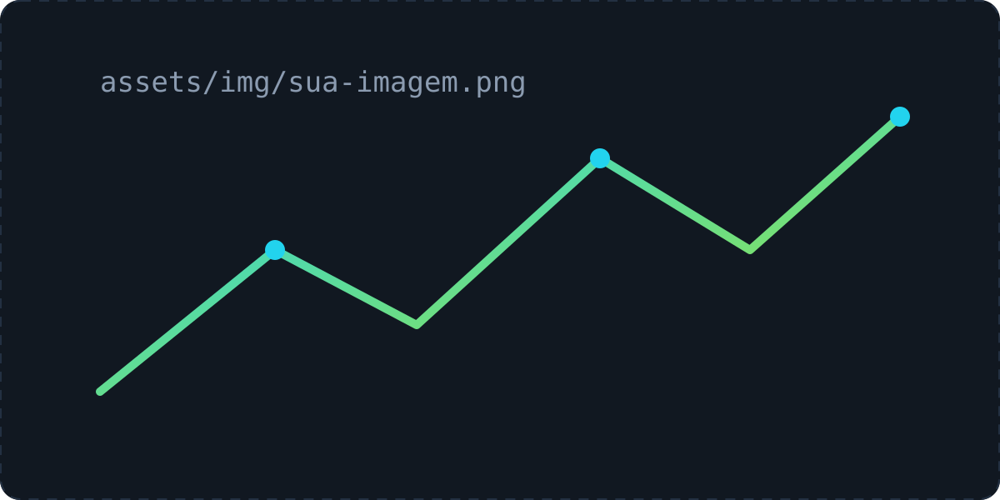

// apresentação
Carreira em Tecnologia
Subtítulo da apresentação — substitua pelo seu roteiro
Mateus Vieira da Assunção
Power Platform Specialist @ Itaú Unibanco
01 · agenda
O que vamos ver
- Primeiro tópico da apresentação
- Segundo tópico, com destaque em uma palavra
- Terceiro tópico com
código inline - Quarto tópico
02 · comparação
Título com duas colunas
Coluna A
- Ponto um
- Ponto dois
- Ponto três
Coluna B
- Ponto um
- Ponto dois
- Ponto três
03 · números
Dados que contam a história
10+anos de algo
42%de alguma coisa
3xmais de outra
“Uma frase marcante que resume a ideia central da apresentação.”
04 · na prática
Exemplo em código
carreira.js
// um exemplo qualquer
const carreira = {
base: 'fundamentos',
pratica: 'projetos reais',
aprender: () => true,
};05 · imagem
Slide com imagem

// fim
Obrigado!
Perguntas?
- github @omateusassuncao
- x @omateusvieira
- linkedin /in/mateusvassuncao